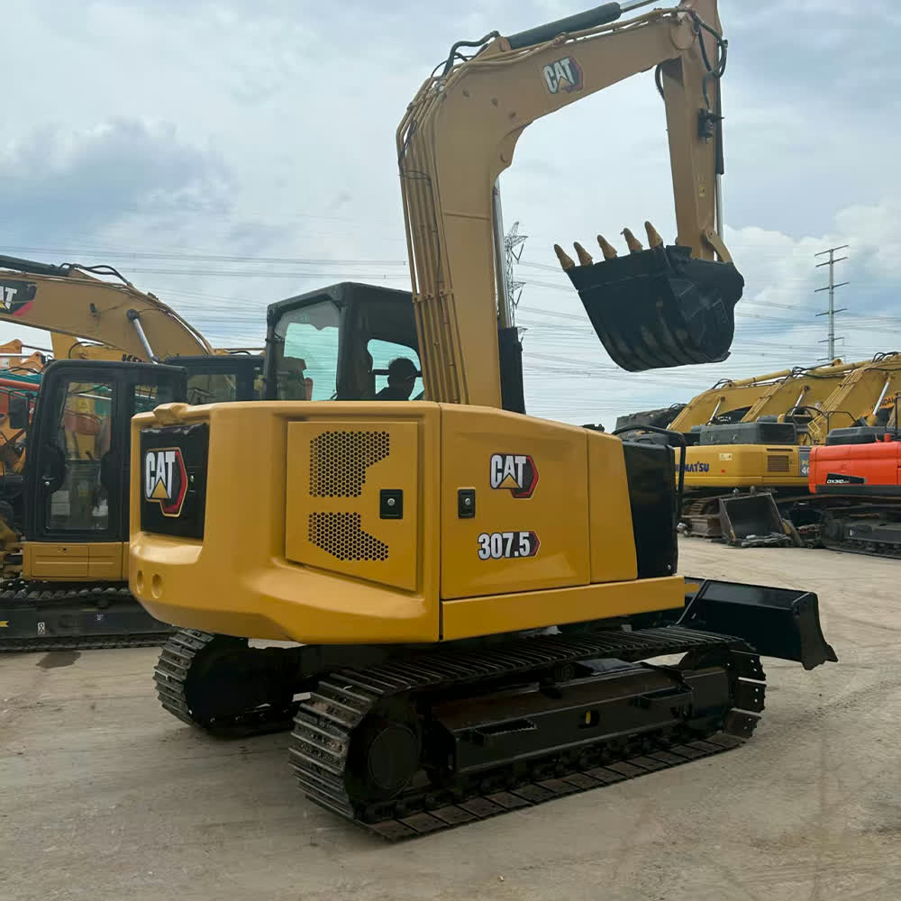

Refurbished Caterpillar Cat 307.5 Excavator
The Caterpillar Cat 307.5 Excavator is a compact and versatile machine designed for a wide range of tasks, from excavation and grading to lifting and material handling. Renowned for its excellent maneuverability, fuel-efficient engine, and powerful hydraulics, the Cat 307.5 stands out in tight spaces and challenging environments. A refurbished Cat 307.5 offers the same reliable performance and durability as a new model but at a more budget-friendly price, making it an ideal choice for contractors looking to maximize their return on investment.
Honestly, it's almost impossible to buy a brand new excavator from China. They either don't exist or are made in China. If a Chinese seller tells you their Caterpillar/Komatsu/Volvo/Kobelco/Hitachi is brand new, they're lying. Therefore, a refurbished excavator is your best bet.

Here are the detailed specifications for a refurbished Caterpillar Cat 307.5 excavator:
Operating Weight and Dimensions
- Operating Weight: ~7,200–7,500 kg
- Transport Length: ~6.1–6.3 meters
- Transport Width: ~2.3 meters
- Transport Height: ~2.5–2.6 meters
- Tail Swing Radius: ~1.6–1.8 meters (compact radius design)
- Track Width: 450 mm standard
- Undercarriage: Variable gauge (expandable for stability)
Engine and Powertrain
- Engine Model: Cat C2.4 Turbocharged (Tier 4 Final / EU Stage V compliant)
- Rated Power Output: ~55.4 kW (74.3 hp) @ 2,400 rpm
- Fuel Tank Capacity: ~135 liters
- Travel Speed: 2.8–5.0 km/h
- Swing Speed: ~10–11 rpm
- Drive Type: Hydrostatic with planetary final drives
Hydraulic System
- Main Pump Type: Load-sensing, variable displacement piston pumps
- Flow Rate: ~2 × 110–120 L/min
- System Pressure: Up to 28 MPa
- Hydraulic Oil Capacity: ~90–100 liters
- Efficiency Features:
- Smart flow distribution
- Boom/swing priority
- Regeneration circuits
- Auto hydraulic warm-up
Performance Metrics
- Bucket Capacity: 0.25–0.35 m³ (SAE heaped)
- Max Digging Depth: ~4.2–4.5 meters
- Max Reach (Horizontal): ~6.5–6.8 meters
- Max Dump Height: ~4.5–4.8 meters
- Bucket Digging Force: ~55–60 kN
- Arm Digging Force: ~40–45 kN
Cab and Operator Features
- Cab Type: ROPS/FOPS certified
- Display: LCD monitor with diagnostics and fuel tracking
- Controls: Pilot-operated joysticks with auxiliary hydraulic circuit
- Comfort: Adjustable seat, optional HVAC, low-noise cab
- Visibility: Wide glass area, rear-view camera, LED work lights
Smart Features and Efficiency
- Fuel Efficiency:
- Auto idle and engine shutdown
- ECO mode
- Emissions Control:
- DOC + DPF + SCR (Tier 4 Final)
- Transportability: Easily trailerable under 8-ton class
Attachments Compatibility
- Standard Bucket: 0.25–0.35 m³
- Optional Tools: Hydraulic breaker, auger, compactor, ripper
- Quick Coupler: Manual or hydraulic options available
Refurbishment Scope
Refurbished Cat 307.5 units typically include:
- Engine Overhaul: Turbocharger, injectors, cooling system
- Hydraulic Restoration: Pump recalibration, valve block testing, hose replacement
- Electrical Diagnostics: Monitor, sensors, wiring harness
- Cab Reconditioning: Seat, joysticks, HVAC, repainting
- Structural Repairs: Boom/bucket welding, bushing replacement, undercarriage rebuild
Overview of the Caterpillar Cat 307.5 Excavator
The Caterpillar Cat 307.5 is a mid-sized, tracked hydraulic excavator designed to perform efficiently in both confined spaces and more expansive job sites. Its compact size makes it perfect for urban construction, landscaping, and utility work, while its impressive reach and lifting power make it versatile enough for a variety of applications, including trenching, foundation work, and material handling. Whether you are working in tight spaces or on complex excavation projects, the Cat 307.5 delivers outstanding performance.
A refurbished Cat 307.5 undergoes an in-depth inspection and reconditioning process, ensuring that the machine meets or exceeds original factory specifications. The result is a cost-effective alternative to buying new equipment, offering the same performance and durability without the high price tag.
Key Specifications of the Caterpillar Cat 307.5 Excavator
The Cat 307.5 is designed with a range of specifications that make it well-suited for a variety of tasks:
-
Operating Weight: Approximately 7,500 - 8,500 kg (16,500 - 18,700 lbs)
-
Engine Power: 55 - 75 hp (41 - 56 kW)
-
Max Digging Depth: Up to 5.6 meters (18.4 feet)
-
Maximum Reach: 7.3 meters (24 feet)
-
Bucket Capacity: Typically 0.3 - 0.5 cubic meters (10 - 17 cubic feet)
-
Fuel Tank Capacity: 120 - 140 liters (31 - 37 gallons)
-
Travel Speed: 5.5 km/h (3.4 mph)
These specifications make the Cat 307.5 highly capable in performing a wide variety of tasks, including trenching, digging, material handling, and grading.
Performance and Efficiency of the Cat 307.5
The Caterpillar Cat 307.5 Excavator is engineered for optimal performance while maintaining fuel efficiency. It combines a powerful hydraulic system with a fuel-efficient engine, ensuring reliable performance even in the toughest conditions.
Performance Highlights:
-
Efficient Hydraulic System: The Cat 307.5 is equipped with a high-performance hydraulic system that enables smooth operation and precise control over the boom, arm, and bucket. This system provides faster cycle times and enhanced productivity, especially in tasks like digging, grading, and material handling.
-
Fuel Efficiency: The Cat 307.5 is designed to reduce fuel consumption without compromising on power. The engine is optimized for efficiency, allowing the machine to operate longer hours on a single tank of fuel, which helps lower operational costs.
-
Digging and Lifting Power: Despite its compact size, the Cat 307.5 offers impressive digging depth and reach. Its powerful hydraulics enable it to tackle demanding tasks such as foundation digging, trenching, and lifting heavy materials, making it suitable for a wide range of construction projects.
-
Precision Control: Operators can enjoy smooth and precise control, even in confined spaces. The responsive controls and ergonomic cabin design make it easy for operators to perform delicate tasks with high accuracy, increasing efficiency on the job site.
Durability and Longevity of the Cat 307.5
Caterpillar equipment is known for its durability and longevity, and the Cat 307.5 is built to withstand the toughest working conditions. The machine’s design focuses on long-term reliability, ensuring that it can perform consistently and efficiently for years to come.
Durability Features:
-
Reinforced Undercarriage: The undercarriage of the Cat 307.5 is built to handle rough and uneven terrain. With durable tracks, sprockets, and rollers, the undercarriage ensures that the machine remains stable and performs well even in challenging environments.
-
Long-Lasting Engine: Powered by a reliable engine, the Cat 307.5 is designed to provide thousands of hours of dependable service. With proper maintenance, the engine can perform efficiently for many years, making the machine a valuable asset for any business.
-
Durable Hydraulic System: The hydraulic system in the Cat 307.5 is engineered to withstand high pressures and frequent use. Its components are built for longevity, minimizing the need for repairs and reducing downtime during operation.
Comfort and Safety of the Cat 307.5
Operator comfort and safety are integral to the design of the Cat 307.5. The machine is equipped with a spacious and ergonomic cabin, providing excellent visibility and a comfortable working environment for long shifts.
Comfort and Safety Features:
-
Spacious Cabin: The Cat 307.5 features an operator-friendly cabin with adjustable seating and easy-to-use controls. The ergonomic design helps reduce operator fatigue, improving overall productivity and comfort during extended shifts.
-
Noise and Vibration Reduction: The cabin is equipped with noise and vibration reduction features that help minimize operator fatigue and provide a more comfortable working environment. This is particularly beneficial when working on long-duration projects.
-
Safety Features: The Cat 307.5 comes with several safety features, including Roll Over Protection (ROPS) and Falling Object Protection (FOPS) to protect the operator in hazardous environments. The machine’s low center of gravity and stable design contribute to its safety when working on uneven or sloped terrain.
Versatility and Attachments for the Cat 307.5
The Cat 307.5 can be equipped with a variety of attachments, allowing it to handle a wide range of tasks. Whether you're digging, grading, lifting, or performing demolition, the Cat 307.5 is versatile enough to adapt to different applications.
Common Attachments for the Cat 307.5:
-
Buckets: The Cat 307.5 can be fitted with various bucket attachments, including general-purpose, heavy-duty, or grading buckets. These buckets range in capacity from 0.3 to 0.5 cubic meters (10 - 17 cubic feet) to suit different material handling tasks.
-
Hydraulic Breakers: For demolition or heavy-duty material breaking, the Cat 307.5 can be equipped with hydraulic breakers. These attachments are ideal for breaking through tough materials like concrete and rock.
-
Augers: The Cat 307.5 can be fitted with augers for digging precise, deep holes. These are ideal for applications such as foundation and post installations.
-
Grapples: The Cat 307.5 can also be equipped with grapple attachments to lift and transport logs, scrap metal, or debris, making it suitable for material handling and light demolition tasks.
-
Quick Couplers: Quick couplers allow operators to change attachments rapidly, reducing downtime and improving productivity on the job site.
Benefits of Purchasing a Refurbished Caterpillar Cat 307.5 Excavator
Opting for a refurbished Cat 307.5 offers several benefits, particularly for businesses that need to manage their budgets while still ensuring high-quality equipment performance.
Key Benefits:
-
Cost Savings: Refurbished Cat 307.5 machines are significantly more affordable than new models, providing the same excellent performance at a fraction of the cost. This is particularly beneficial for businesses looking to maximize their ROI without compromising on equipment quality.
-
Thorough Reconditioning: Each refurbished Cat 307.5 undergoes a detailed inspection and reconditioning process. All worn parts are replaced with genuine Caterpillar components, ensuring that the machine operates like new.
-
Warranty: Many refurbished units come with a warranty, offering buyers peace of mind that their investment is protected in case of unexpected issues.
-
Sustainability: Purchasing refurbished equipment is an environmentally friendly choice. It reduces waste and extends the lifespan of existing machinery, promoting sustainability in the construction and heavy equipment industries.
Maintenance Tips for the Caterpillar Cat 307.5 Excavator
To ensure the Cat 307.5 continues to deliver high performance and reliability, regular maintenance is essential. A proactive maintenance approach can prevent costly repairs and extend the lifespan of the machine.
Maintenance Recommendations:
-
Engine Maintenance: Regularly check and replace engine oil, air filters, and coolant levels to keep the engine running smoothly. A well-maintained engine ensures optimal performance and longevity.
-
Hydraulic System: Inspect the hydraulic hoses for leaks and replace hydraulic filters as needed. Keeping the hydraulic system clean and in good condition ensures efficient operation.
-
Undercarriage: Regularly inspect the undercarriage for wear, especially the tracks, rollers, and sprockets. Timely replacement of damaged components can help prevent further damage and ensure smooth operation.
-
Attachments: Check the condition of the attachments, including buckets and grapples, to ensure they are functioning properly. Repair or replace damaged parts as needed to maintain optimal performance.
Conclusion
The Caterpillar Cat 307.5 Excavator is a versatile and reliable machine that delivers excellent performance, fuel efficiency, and durability. A refurbished Cat 307.5 offers a cost-effective solution for businesses looking to invest in high-quality equipment without the high price tag of new models.
Our Commitment
- 2 years / 4000 hours warranty.
- EPA certified.
- No sweatshop labor.
Contacts

- [email protected]
- Youtube Instagram Facebook
- Navigation: G206 (Sishu Bridge) in Changfeng County, Hefei City, Anhui Province, 200 meters north to the east